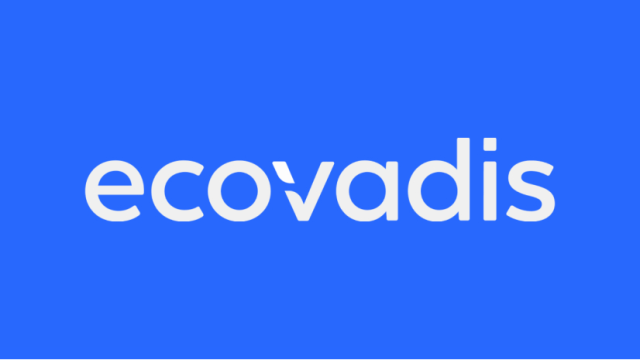

Partner e affiliazioni

2022
EcoVadis
Le strutture Culligan in località come Germania, Italia, Francia e Australia sono certificate da EcoVadis, a testimonianza delle nostre operazioni sostenibili nei settori Ambiente, Etica, Lavoro e Diritti Umani, e Acquisti Sostenibili

Partecipante dal 2023
UN Global Impact
UN Global Compact è un patto non vincolante delle Nazioni Unite per incoraggiare le aziende e le imprese di tutto il mondo ad adottare politiche sostenibili e socialmente responsabili e a riferire sulla loro attuazione

Membro sostenitore
Water Resilience Coalition
Il CEO Water Mandate mira a mobilitare una massa critica di leader aziendali per affrontare le sfide globali legate all'acqua attraverso una gestione responsabile dell'acqua da parte delle aziende, in collaborazione con le Nazioni Unite, i governi, la società civile e altri soggetti interessati